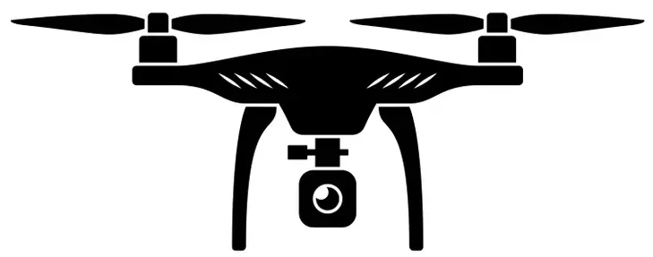
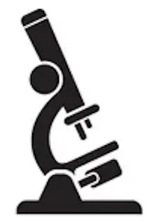

For manufacturers, environmental organizations, and research teams, we build computer vision systems that reduce manual review workload, improve detection consistency, and speed up reporting from visual data.
Who we support
Manufacturing teams, environmental monitoring programs, and R&D groups using images and video in workflows.
Typical outcomes
Rapid insights from images and video, consistent monitoring, and automated alerts to problematic conditions.
Engagement model
Pilot on your existing image data, define measurable targets, then scale to production workflows.
A commercial construction company needed better visibility across large job sites where multiple crews were working simultaneously. While site cameras, drone imagery, and mobile photos were already being collected, reviewing thousands of images manually made it difficult to consistently detect safety risks or track construction progress.
QSC developed a computer vision system that analyzed imagery from fixed cameras, drone surveys, and mobile devices. Using deep learning-based object detection and anomaly detection, the system identified potential safety issues and unusual site conditions while providing project managers with a unified monitoring platform accessible through desktop and mobile applications.
The result was a more consistent way to monitor construction activity, detect emerging risks, and maintain visibility across complex projects.
Read the full case studyAutomated classification and counting for large camera-trap datasets so field teams can spend less time labeling and more time on decisions.

Aerial image models for faster land-cover mapping, anomaly detection, and asset monitoring across environmental and industrial projects.

Microscopy and fluid-imaging workflows that quantify particles consistently for water quality, lab QA, and biomedical screening.
Our team has contributed to peer-reviewed research in computer vision:
Whether you’re working with camera traps, drones, microscopy, or industrial inspection, QSC can help. Let’s talk about how computer vision can unlock new insights and efficiency for your mission.
Book a Free 30-Minute Computer Vision Assessment